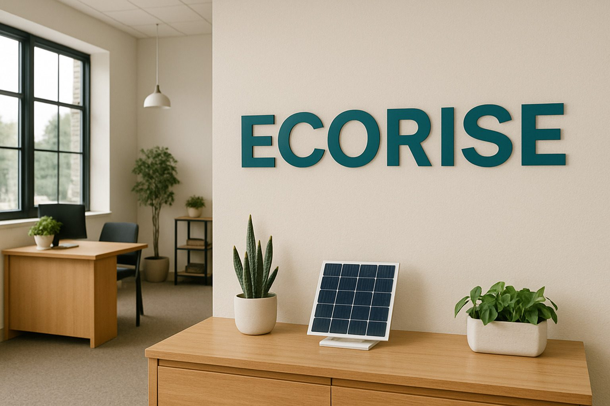

Una primera conversación debería ahorrar tiempo, no sumar reuniones.
Si podés, compartí qué tipo de operación tenés, qué problema querés resolver y qué datos ya están disponibles. Con eso podemos decidir si conviene una evaluación preliminar, una prefactibilidad, una inspección o una reunión técnica.
Proyecto nuevo
Consumo, ubicación, superficie, objetivo y horizonte de inversión.
Sistema existente
Qué está ocurriendo, desde cuándo, alarmas disponibles y antecedentes de mantenimiento.
Decisión de inversión
Alternativas que se están comparando y qué incertidumbre falta resolver.
Agendá un diagnóstico inicial
Reservá un espacio para revisar el contexto de tu empresa o proyecto con Ecorise.
Agendar reuniónTambién podés escribirnos
Email: info@ecorise.com.ar
Teléfono / WhatsApp: +54 351 517-7298
Ubicación: Córdoba, Argentina

Podés empezar por ordenar el problema.
La evaluación preliminar ayuda a estructurar datos básicos de consumo y perfil diurno. No reemplaza un estudio, pero puede servir como punto de partida antes del contacto.
Abrir evaluación energéticaEstrategia, ingeniería y energía en una misma conversación.
El objetivo de la primera reunión es saber si podemos aportar valor y cuál debería ser el siguiente paso.
¿Tenés facturas o información técnica?
Tenelas a mano para la reunión. Ayudan a pasar de una idea general a preguntas concretas.
Agendar diagnóstico